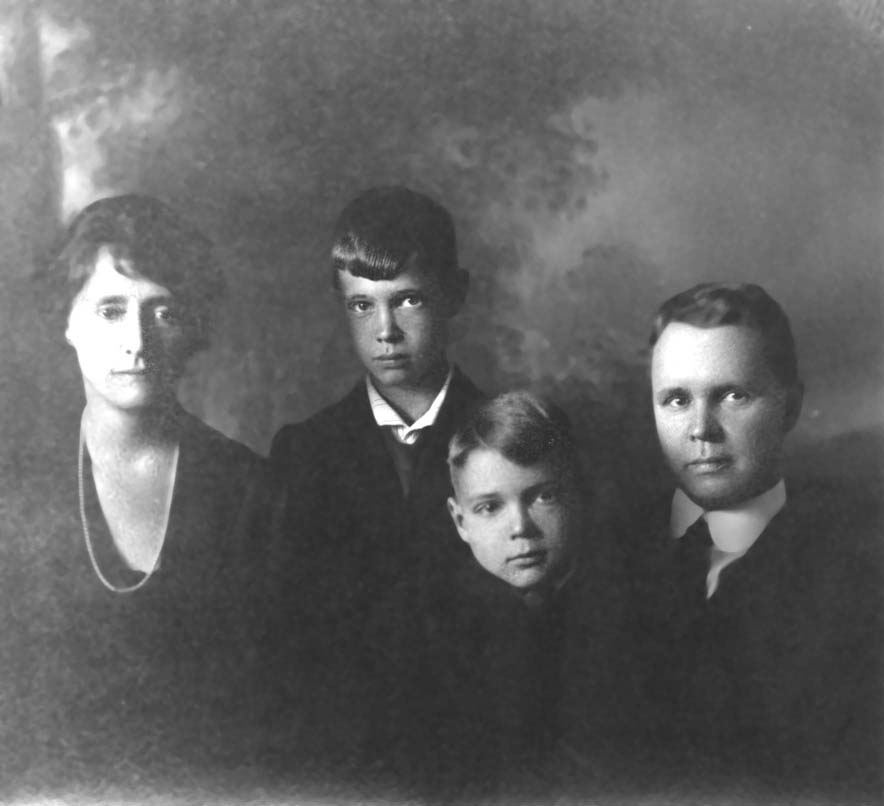

CAMPBELL COUSINS CORRESPONDENCE

Dear Cousins:
I received Volume I of the
Campbell Cousins Correspondence some time ago and have
thoroughly enjoyed reading the letters. A letter of mine
will not be much of an addition, but it will entitle me
to hear from all the Cousins, and you who live far away
from your friends, know what a treat that will be.
Our vacation was spent in Tioga
County; of course, and we made an effort to see all the
relatives we could, but one cannot do a great deal in
that length of time.
We have two boys, Charles, Jr.
and Marcus Seely, and they are live wires. I feel, most
of the time, as though I were being blown about by a
cyclone.
While we were in Osceola, Father and Uncle Jud entertained us
by telling some of the things they did in their boyhood
days. I was greatly amused at some of the things and
decided that Father must have been a "Reglar Fellar"
despite his assertions to the contrary. It also occurred
to me that Marcus, his namesake and our youngest, has
more of his grandfather's characteristics, than we
realized.
My husband, Charles Blanchard,
has a responsible position with the General Electric
Company here in Pittsfield.
We are very pleasantly located
here, but wish we were not so far from Tioga County.
I am eagerly awaiting the coming
of the next report and think we should give Cousin Will "Three
Rousing Cheers".
With love to all the Cousins, I am,
Very sincerely,
COUSIN EMILY
S. BLANCHARD.
- Report No. 2 - Page 35 -
(Mary Ann Campbell
Family)